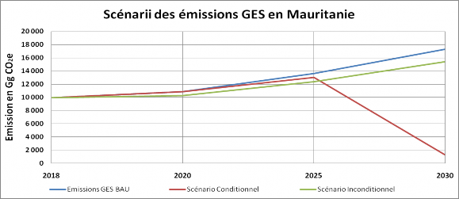
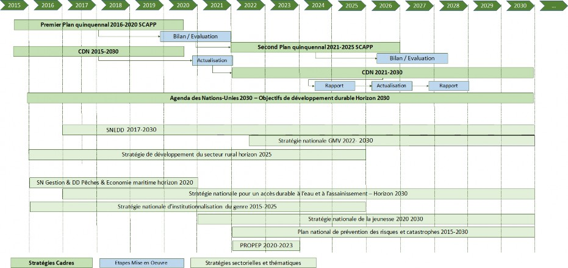
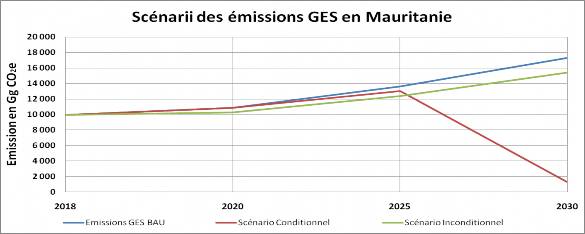
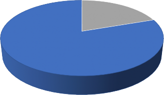

Promote climate-resilient development and the creation of sustainable green jobs
KEY MESSAGES FROM THE NDC 2021-2030
Mauritania's total GHG emissions represent 0.015% of global global emissions. The largest contribution to this total emissions comes from AFOLU and energy. These two sectors account for 99% of emissions.
The “normal course of business” baseline scenario calculated on the basis of SCAPP growth data shows that direct greenhouse gas emissions, expressed in terms of Global Warming Potential (GWP), are globally in clear progression, going from 3481.213Gg Eq-CO2 in 1990 to 9944.618 Gg Eq-CO2 in 2018, an increase of 185.67% (Source BUR2 2021).
Mauritania belongs to one of the regions of the world most vulnerable to climate change, the effects of which are already affecting all sectors of its economy, its ecosystems and its populations, in particular, women and children.
Mauritania is fully committed to the implementation of the UNFCCC and the Paris Agreement to contribute to global efforts to reduce global GHG emissions by making available to the world community all the mitigation potential available the country. This potential is constituted by the enormous deposit of clean energy production, wind and solar.
Thus, Mauritania's updated NDC provides for a net economy-wide reduction of GHG emissions of 11% in 2030 compared to the reference scenario with the country's own means supported by comparable international support to that received up to 2020. With greater support, Mauritania could ensure its carbon neutrality, up to a conditional 92% reduction compared to the BAU.
The overall cost of this ambition is estimated at 34,255 Million US$, of which 635 Million US$ is unconditional, i.e. 1.85%.
In view of its extreme vulnerability, Mauritania has broadened its adaptation ambition to cover the following areas: protection and conservation of ecosystems including wetlands, sustainable management of rangelands, conservation of biodiversity, fishing and aquaculture, housing and urban planning, agriculture and food security including genetic improvement, health, water, coastal management, prevention of extreme climatic events, infrastructure and education. This expansion is based on the preparation program for access to the Green Climate Fund (Readiness) and the results of the first studies carried out as part of the process of developing the National Adaptation Program (PNA) of the country.
The financing needs for adaptation measures are USD 10,626.46 million, of which USD 10,174.63 million are conditional and USD 451.83 million are unconditional.
In addition to the conditional funding required to ensure the mitigation ambitions and implement the country's adaptation actions, the implementation of Mauritania's NDC 2021-2030 requires support in terms of capacity building for all development actors, integration of cross-cutting aspects (gender, youth, human rights, employment and education) and the operationalization of a measurement, verification and notification system to ensure the monitoring and evaluation of the action climate.
By harmonizing its development process with that of the SCAPP and relying on the country's sectoral strategies and programs, the NDC defines the framework for the country's climate policy by 2030. It provides a framework consultation and dialogue to all stakeholders to define transformative, integrated, inclusive, clean and sustainable programs.
PART ONE – EXECUTIVE SUMMARY
1. Introduction
Mauritania is one of the Sahelian countries most affected by recurrent droughts since 1968. The resulting desertification is all the stronger as the effect of the climate, combined with human action, has direct consequences in an already very precarious environment. The country's vulnerability to climate change affects all vital sectors of the national economy.
By ratifying the UNFCCC, Mauritania is resolutely committing to the global process of combating global warming by limiting GHG emissions and implementing adaptation strategies compatible with its sustainable development policy. It reaffirms this commitment by ratifying the Paris Agreement and submitting its first National Determined Contribution (NDC) in 2015. to the efforts of the international community, by making available, in a conditional form, a potential mitigation of approximately 33.56 million tons Eq-CO2, i.e. 22.3% compared to projected emissions for the same year, according to the reference scenario (normal course of business), during the period 2020-2030.
In 2015, the process of developing the NDC took place while the country was changing its strategic development vision from the Strategic Framework for the Fight against Poverty (CLSP, 2001-2015) to the National Growth Strategy Accelerated Growth and Shared Prosperity (SCAPP) whose first five-year action plan covers the period from 2016 to 2020.
In 2021, and in accordance with the five-year NDC update cycle promoted by the Paris Agreement (PA), Mauritania is updating its NDC at the same time as it takes stock of the first five-year implementation plan. work of the SCAPP which should give rise to the definition of the second five-year plan 2021-2025. The concomitance of the two processes, SCAPP and NDC, ensures consistency between the two political frameworks and the synergy of the programs included in them.
While the SCAPP constitutes Mauritania's strategic development vision for the period 2016-2030 and serves as a reference framework for all development actions undertaken by the State, public and socio-professional bodies as well as technical partners (PTF), the NDC serves as a framework for defining the country's climate policy and an instrument for its implementation. Like the SCAPP, it incorporates the United Nations 2030 Agenda and the priority targets for the country among the Sustainable Development Goals (SDGs) as well as the orientations of the African Union's Agenda 2063. It draws legitimacy from the mitigation ambitions it advocates and the adaptation actions it defines from the sectoral and thematic strategies from which they stem.
Figure 1: Main strategies of the planning framework for social, economic, cultural and environmental development (ie sustainable development) in Mauritania
2. NDC 2021-2030 Updated Mitigation Ambitions
Mauritania's updated NDC projects a net reduction in economy-wide GHG emissions of 11% in 2030 (green curve) compared to the reference scenario (BAU, blue curve) with clean means of the country supported by international support comparable to that received up to 2020. With more substantial support, Mauritania could ensure the carbon neutrality of its economy, by achieving a 92% reduction (red curve) compared to the BAU. The overall cost of this ambition is estimated at 34,255 Million US$, of which 635 Million US$ is unconditional, i.e. 1.85%.
The mitigation ambition covers the four emission sectors (Energy, PIUP, AFOLU and Waste). The most important mitigation efforts are based on the country's significant renewable energy potential and the capacity to increase the share of clean energies in the energy mix to reach more than 13 GW renewable in 2030, but also on the AFOLU sector. with potential focused on forestry through ambitious projects and programs (Great Green Wall, assisted forest regeneration programs, rangeland regeneration and combating desertification), agroecology and improving livestock productivity
Compared to the 2015 CDN, the energy sector takes first place in terms of potential ambition, ahead of AFOLU. Indeed, and despite the significant efforts made by the country in terms of reforestation and restoration of degraded land, particularly within the framework of the Great Green Wall program, the mitigation ambitions of the CDN-2015 in the water sector Agriculture, forestry and other land allocations (AFAT sector) of 10,000 ha per year of reforestation have not been achieved due to the low levels of external financing mobilized. Over the period considered, 2015-2020, the annual maximum that could be reached is only 1800 ha (Source DPREM/MEDD).
On the other hand, the results achieved in terms of energy mix exceeded the conditional efforts planned, rising from 18% in 2015 to 33.91% in 2018, with an even greater improvement thanks to the commissioning of the wind farm of 100 MW of Boulenouar which makes it possible to reach an energy mix of 48% in 2021.
The country's mitigation ambition is made up of a total of 55 measures including 33 unconditional measures with a total capacity of 1834.268 Gg CO2eq compared to the normal course of business scenario (BAU) and 22 conditional measures for a reduction in 2030 of 16134.62 Gg Eq. CO2representing a 92% reduction compared to BAU. These measurements are given in Table no. 2 (detailed in Appendix 1 Summary Report).

Figure 2: Scenarios of GHG emissions in Mauritania
3. Adaptation actions recommended by the CDN 2021-2030
Extremely vulnerable, Mauritania has broadened its adaptation ambition to cover the following areas: protection and conservation of ecosystems including wetlands, rangeland management, biodiversity conservation, fishing and aquaculture, habitat and urban planning, food security including genetic improvement, health, infrastructure, education, and prevention of extreme climatic events. This expansion is based on the preparation program for access to the Green Climate Fund (Readiness) and the results of the first studies carried out as part of the process of developing the country's National Adaptation Program (NAP).
The financing needs for adaptation measures are USD 10,626.46 million, of which USD 10,174.63 million are conditional and USD 451.83 million are unconditional. The recommended actions are detailed in Table no.3.
To meet the challenges of integrating climate change into sectoral strategies and policies, the implementation of identified adaptation actions must be planned as part of a cross-sectoral and integrated approach that includes all stakeholders and stakeholders. sectors concerned. To do this, the NDC 2021-2030 must serve as a framework for consultation and dialogue to define transformative programs that meet the needs of strengthening the resilience of populations and ecosystems with regard to their vulnerability to climate change.
The co-benefits of mitigation actions for adaptation and vice-versa as well as synergies with other sustainable development planning frameworks, in particular the SDGs, are highlighted in the financial mechanism and annex 1 of the summary document.
4. Capacity building needs and implementation support
In addition to the financial support expressed as conditional support for mitigation measures and adaptation actions, the NDC 2021-2030 defines needs in terms of capacity building, technology transfer and training, in particular for the education of young people.
In terms of capacity building, the establishment of an operational measurement, verification and reporting (MRV and MRV) system is a priority action in the process of implementing the UNFCCC and the Paris Agreement. The implementation of this system is mandatory for the country (2024 deadline for submission of the biannual transparency report – initial BTR). In addition, and although not binding for the country, the development of an action plan for the implementation of the NDC is a prerequisite for the MRV/MRV.
Mauritania has already made substantial efforts in this direction. The establishment and institutionalization of the national network of sectoral climate focal points (PFS), civil society and the private sector, in 2013, is a first step. In September 2020, the Ministry of Environment and Sustainable Development (MEDD) consolidated its institutional mechanism by establishing the Climate and Green Economy Directorate (DCEV) to coordinate the entire national program on climate change. This institutional mechanism is consolidated by a network of independent experts from the academic community who have contributed to the preparation of all national communications, GHG inventories and updated biannual reports, etc. required for reporting to the UNFCCC.
Notwithstanding all these achievements, significant gaps persist in the collection and processing of the data needed to transparently and clearly report on the implementation of the country's climate policies, measures and strategies. These gaps were identified as part of the preparation of the project identification document which was submitted to the GEF-7 CBIT (Capacity Building Initiative for Transparency) program for a total amount of $1,263,650 US.
The project will define the responsibilities of the actors of the NDC, in particular the way in which the ministries other than the MEDD will participate in the implementation of the NDC and the operation of the MRV system.
The other priorities in terms of capacity building for the implementation of the NDC concern the continuation of readiness efforts by sector departments, the private sector and civil society.
They also concern the integration of cross-cutting dimensions in climate programs and projects. Thus, the integration of the gender, youth and human rights dimensions is provided for in all the projects and programs developed within the framework of the NDC by reserving a share of 10% of the budget of each program or project for it (Estimate based on the assessment the gender/youth/employment/education expert group and the working group of experts based on the Doha work program and the Paris agreement in its article 12). Similarly, the aspects of job creation and improvement of educational curricula to take on the challenges of climate change are considered among the priorities for supporting the implementation of the NDC.
Technology transfer needs assessments were carried out in 2017. They led to the identification of two priority sectors for adaptation (agriculture, rangelands and forests) and two priority sectors for mitigation (energy and They will have to be updated in the light of the new mitigation and adaptation options retained in the updated NDC 2021-2030.
5. CDN 2021-2030 funding needs and funding plan
Table 1: Summary of funding needs for the updated NDC 2021-2030
|
CDN Domains |
Unconditional Funding |
Conditional Financing |
Total per Domain in US$ million |
|
Attenuation |
635 |
33621 |
34256 |
|
Adaptation |
451.83 |
10174.63 |
10626.46 |
|
Integration of gender, youth and human rights |
45,183 |
1017,463 |
1062,646 |
|
Jobs and Education |
- |
337.75 |
337.75 |
|
Capacity building |
- |
279.37 |
279.37 |
|
Implementation and operationalization of the measurement, verification and reporting system |
1,263,650 |
1,263,650 |
|
|
Total |
1132,013 |
45429,213 |
46561,226 |
In Mauritania, there is no funding system specifically dedicated to climate change. The MEDD has developed several skills in mobilizing climate finance from specific international funds (green climate fund, adaptation fund, funds from multilateral development banks, etc.) and TFPs.
However, capacity building must be planned to encourage private sector investment, strengthen the national financial system through the contribution of the national banking system to the financing of sustainable development in general and climate actions, in particular and, finally , to consider innovative financing through, for example, the generation of new tax resources capable of financing climate actions.
Also, Mauritania has, in addition to its direct financial support, supporting its mitigation financing needs through:
The NAMA platform, particularly for energy efficiency and renewable energy programs.
The adoption and inclusion of international carbon markets such as the Clean Development Mechanism (CDM) in post 2020 climate agreements in accordance with Article 6 of the Paris AgreementiThis approach aims to implement put in place a price on carbon that can serve as an effective means of reflecting these costs while sending clear economic and political signals encouraging cost-effective decarbonisation. These instruments, coupled with an appropriate accounting regime (MNV/MRV), could help finance certain investments in low-carbon and climate-resilient infrastructure.
Low-carbon development options contained in its NDC 2021, could be financed by the international transfer of carbon assets (mitigation result transferable at the international level) taking into account considerations of environmental integrity and transparency.
In this context, Mauritania intends to satisfy part of its adaptation ambitions conditional on this type of process.
The recent contracts signed for the introduction of new green hydrogen techniques are an example of this type of mechanism.
Table 2: Updated NDC 2021-2030 mitigation measures by sector (Cost and cumulative reduction potential for the period)
|
Sectors / Sub-Sectors |
Contributions to total mitigation efforts |
Challenges / Constraints |
Recommended measures |
|
Energy – 37,452.46 Gg Eq-CO2 of which 17.86% unconditional |
|||
|
Renewable energy 31,817.81 Gg Eq-CO2 of which 6.06% unconditional |
|||
|
Energy efficiency –5634.65 Gg Eq-CO2 of which 84.62% unconditional |
|||
|
ENERGY (renewable and energy efficiency) |
37452.46 Gg Eq-CO2 i.e. (93.10%) |
|
|
|
Transport –92.65 Gg Eq-CO2 of which 5.21% unconditional |
|||
|
Transportation |
92.65 Gg Eq-CO2 i.e. (0.23%) |
|
|
AFAT – 474.402 Gg Eq CO2 of which 37.24% unconditional |
|
Agriculture & Livestock |
58.382 Gg Eq-CO2 i.e. (0.14%) |
|
|
|
Forestry and other land uses |
418.02 Gg Eq-CO2 i.e. (1.04%) |
|
|
|
Waste – 1573.99 Gg Eq CO2 of which 0.56% unconditional |
|||
|
Solid waste |
1573.99 Gg Eq-CO2 i.e. (3.91%) |
|
|
|
Industry – 633.96 Gg Eq CO2 of which 55.56 unconditional |
|||
|
Energy efficiency in industry |
633.96 Gg Eq-CO2 i.e. (1.58%) |
|
|
|
The cumulative GHG reduction potential 2021-2030 is: 40227.462 GgEq-CO2 |
|||
Table 3: NDC 2021-2030 adaptation measures updated by sector
|
Sectors |
Climatic hazards/Projections |
Vulnerabilities / Impacts |
Adaptation actions |
|
Natural resources |
More frequent and more severe droughts Disturbance of the rainy season Temperature increase Sand and dust storms More severe heavy rains |
|
|
|
Coastline |
Sea level rise |
|
|
|
Agriculture |
More frequent and more severe droughts Disturbance of the rainy season Sand and dust storms Temperature increase Intense more severe rains; |
|
|
|
Breeding |
More frequent and more severe droughts Temperature increase; |
|
|
|
Inland Fishing |
Disturbance of the rainy season Temperature increase Sand and dust storms |
|
|
|
Water & Sanitation |
More frequent and more severe droughts Disturbance of the rainy season Intense more severe rains |
|
|
|
Housing, Urban Planning and Regional Development |
More frequent and more severe droughts Temperature increase Sand and dust storms Intense more severe rains |
|
|
|
Health |
More frequent and more severe droughts Disturbance of the rainy season Temperature increase Intense more severe rains |
|
|
|
Education/ Higher Education/Research |
|
||
|
Employment |
|
PART TWO – SUMMARY DOCUMENT
1. Intro
Non-Annex 1 country of the UNFCCC, Mauritania belongs to the zone of the African Sahel most affected by recurrent droughts since 1968. The resulting desertification is all the stronger than the effect of the climate, combined with the action of man, has direct consequences on an already very precarious environment. The country's vulnerability to climate change affects all vital sectors of the national economy.
By ratifying the UNFCCC, Mauritania is resolutely committing to the global process of combating global warming by limiting GHG emissions and implementing adaptation strategies compatible with its sustainable development policy. It reaffirms this commitment by ratifying the Paris Agreement and submitting its first National Determined Contribution (NDC) in 2015. Although the country's emissions constitute barely 0.015% of global global emissions, Mauritania is committed through its NDC to fully participate to the efforts of the international community, by making available, in a conditional form, a potential mitigation of approximately 33.56 million tons Eq-CO2, i.e. 22.3% compared to projected emissions for the same year, according to the reference scenario (normal course of business), during the period 2020-2030.
The WMO report2 states that if the first round of NDCs does not were fully implemented this would lead to a warming of 2.9 to 3.4 degrees C over the century. Increased mitigation ambition is therefore essential to achieve the Paris Agreement target of limiting warming to well below 2 degrees C, or 1.5 degrees C. In this sense, Article 4 of the Paris Agreement, as well as decisions 1/CP.19, 1/CP.20 and 1/CP.21 of the UNFCCC establish a five-year cycle for updating the NDCs which must correspond to an increase in relation to the contribution determined at the previous national level and at its highest possible level of ambition.
On a global scale, the update of the NDC is an opportunity for the international community to improve adaptation planning and strengthen the commitment and transparency of countries in terms of mitigating carbon emissions. greenhouse gases in order to achieve the objectives set by the Paris Agreement and limit the rise in global temperature to +1.5 C° by 2050, compared to the pre-industrial era.
Thus, the NDC 2021-2030 reflects the efforts made by Mauritania to contribute to the progress over time of global efforts while recognizing its need for multifaceted support (capacity building, access to technologies and financing) for their implementation. effective work.
Indeed, Mauritania aims to assume a contribution to the mitigation of greenhouse gas (GHG) emissions that is more significant than that of its previous and first NDC. Similarly, the country intends to strengthen its efforts to adapt to climate change to strengthen the resilience of its populations, ecosystems and infrastructures most vulnerable to climatic hazards. And this, in accordance with its responsibility and in total harmony with the objectives of saSCAPP which constitute the strategic development vision of Mauritania for the period 2015-2030 and serves as a reference framework for all development actions undertaken by the State, the public and socio-professional bodies as well as Technical and Financial Partners (TFP) over the period 2015-2030. It integrates the 2030 Agenda and the priority targets for the country among the Sustainable Development Goals (SDGs) as well as the 2063 agenda of the African Union.
At the national level, updating the NDC is an opportunity for Mauritania to strengthen the integration of climate change into the country's development policies and strategies by drawing lessons from the implementation of the NDC -2015.
In 2015, the process of developing the NDC took place while the country was changing its strategic development vision from the Strategic Framework for the Fight against Poverty (CLSP, 2001-2005) to the National Growth Strategy Accelerated Growth and Shared Prosperity (SCAPP) whose first five-year action plan covers the period from 2016 to 2020.
In 2021, and in accordance with the five-year NDC update cycle promoted by the Paris Agreement (PA), Mauritania is updating its NDC at the same time as it takes stock of the first five-year implementation plan. work of the SCAPP and the definition of the second five-year plan 2021-2025. The concomitance of the two processes, SCAPP and NDC, ensures consistency between the two political frameworks and the synergy of the programs included in them.
While the SCAPP constitutes Mauritania's strategic development vision for the period 2015-2030 and serves as a reference framework for all development actions undertaken by the State, public and socio-professional bodies as well as technical partners (PTF), the NDC serves as a framework for defining the country's climate policy and an instrument for its implementation. Like the SCAPP, the updated NDC incorporates the United Nations 2030 Agenda and the targets prioritized for the country among the Sustainable Development Goals (SDGs) as well as the orientations of the African Union's Agenda 2063. It draws legitimacy from the mitigation ambitions it advocates and the adaptation actions it defines from the sectoral and thematic strategies from which they stem. It serves as an instrument for coordination between sectors and as a basis for technical and financial partners (TFP) to plan the integration of climate issues into their strategic framework for intervention in the country and the programs and projects they support there. .
The updated NDC 2021-2030 vision to “Promote climate-resilient economic and social development and the creation of sustainable green jobs” carries a basic change in the ambition of the objective of the mitigation, moving from a GHG emissions reduction target of 22.3% in the 2015 NDC towards carbon neutrality by 2030including an unconditional 11% reduction in the year's emission 2030 according to the BAU scenario.
Mauritania considers the NDC update to be sufficiently fair and ambitious in that it goes beyond the proposed strategies and programs granted to LDCs in paragraph 6 of article 4 of the Paris Agreement. This ambition is able to contribute to a low-carbon and climate-resilient economy by 2030, in line with the national situation and the SCAPP by 2030.
2. National circumstances
Table 4: National data
|
Area / length of coastline |
1,030,000 km2 / 720 kilometers of coastline (ONS)3 |
|
Climate |
South: Sahelian climate, hot and semi-arid. North: Saharan climate, hot and arid to hyper arid (ONM)4 |
|
People |
3,537,368 inhabitants, of which 54% are under 20 (RDHP 2013), 4,173,077 in 2020 (ONS) |
|
Urban population |
48.30% in 2013 compared to 52.8% in 2020 (ONS) |
|
GDP |
|
|
GDP per capita |
USD 1,392 at the end of 2019 (MAEPSP) |
|
GDP Growth |
3.2% in 2020 against growth of 6.3% anticipated before the COVID crisis (MAEPSP) between -2 and -6% expected in 2021 |
|
Share of agriculture (including livestock) in GDP |
17% (MAEPSP) |
|
Emissions in 2018 (base year) |
9944.618 Gg CO2-eq (RNI, 2020)7 |
|
Emissions in 2020 |
10,423 Gg CO2-eq (BUR, 2021) |
|
Emissions per capita |
2.5 tons Eq-CO2 per capita in 2018 (RNI-BUR2) |
|
Emissions per capita excluding AFOLU 2018 |
0.86 tons Eq-CO2 (RNI-BUR2) |
|
Access to electricity |
48% of households (WB)8 |
|
Current electric mix |
In 2015, excluding mining operators: 13.80% hydro, 17.40% RE and 68.80% thermal In 2020 excluding mining operators: 16.73% hydro, 17.67% ER and 65.6% thermal (DEME)9 |
The development of the first NDC in 2015 was concomitant with the adoption of the SCAPP 2015-2030 carrying a new vision of the economic, social and environmental development of Mauritania based on the lessons learned and the results obtained from the implementation of the Strategic Framework for the Fight against Poverty (CSLP 2001-2015).
In 2021, the update of the NDC comes as the country takes stock of the first five-year period of the implementation of the SCAPP (2015-2020) to define the action plan for the second five-year period (2021-2025 ). It is also taking place in a context of development adversely affected by the COVID-19 pandemic which has hit the country's entire economy hard, thus creating an unprecedented crisis. Beyond the shock resulting from containment measures and the paralysis of economic activity, global economic integration has accentuated the scale of such a crisis. Furthermore, the costs of health, safety and prevention measures, combined with an unfavorable international situation, have had negative effects on the country's public finances. To cope with this exogenous shock, the Government has put in place a National Multisectoral Response Plan to COVID-19 in order to mitigate the impact of the pandemic on populations, economic sectors and the natural environment. This plan is built around the following pillars:
Development of infrastructure to support growth
Improving the social offer and supporting demand
Enhancing the potential of productive sectors and accelerating the achievement of food self-sufficiency
Support to the private sector (formal and informal)
Environment and job creation
Governance and program implementation.

Figure 3: Main strategies of Mauritania's social, economic, cultural and environmental development planning framework (ie sustainable development)
3. NDC Mitigation Component
3.1.Mauritania's mitigation ambition
Ambition of the CDN 2021-2030
Mauritania's updated NDC projects a net reduction in economy-wide GHG emissions of 11% in 2030 (green curve) compared to the reference scenario (BAU, blue curve) with clean means of the country supported by international support comparable to that received up to 2020. With more substantial support, Mauritania could ensure its carbon neutrality, up to a reduction of 92% (red curve) compared to the BAU. The overall cost of this ambition is estimated at 34,255 Million US$, of which 635 Million US$ is unconditional, i.e. 1.85%.

Figure 4: Scenarios of GHG emissions in Mauritania, horizon 2030
The assessment of the implementation of the SCAPP during the first five-year period 2015-2020 leads to a change in priorities: the Agriculture/Forestry/Land Use (AFOLU) sector identified as the main potential mitigation sector by the 2015 CDN , has made little progress due to the lack of funding mobilized for the sector. Unconditional funding despite the political will expressed in recent years through large-scale projects and programs (Great Green Wall, Reforestation projects, land degradation projects, etc. ) did not make it possible to achieve the objective set of 10,000 ha per year as planned in the CDN 2015. The maximum recorded over the period 2015-2020 is 1,800 ha for a single year, all interventions taken into consideration.
On the other hand, the results achieved in terms of the energy mix exceeded the planned conditional efforts, rising from 33.91% in 2018 against a share of 18% in 2015. This situation has been greatly improved with the commissioning of the 100 MW Boulenouar wind farm to reach a mix of 48% in 2021.
Thus, Mauritania's mitigation ambition put forward in its updated NDC 2021-2030 builds on these results and is based on the country's significant renewable energy potential.
The unconditional mitigation ambition is composed of 33 mitigation measures covering the 5 emission sectors with a capacity of 1834 Gg Eq.CO2. The conditional ambition has 22 actions also covering all sectors for a reduction of 16008 GgEq-CO2 representing a reduction of 92% compared to the BAU.
GHG emissions in Mauritania remain dominated by the Agriculture/Forestry/Land Use sector (AFOLU), in particular livestock which alone accounts for 52.65% of emissions. The energy sector is the second source of emissions. The Industrial Processes and use of PIUP products sector is weakly developed. Despite its low contribution to the country's GHG emissions balance sheet, the waste sector constitutes a real development challenge. Municipal, industrial and commercial solid waste has the particularity of having a low moisture content (less than 10%) which limits its fossilization and the country does not have a basic collective sanitation system to treat liquid waste. . Thus, the coverage of access to collective sanitation is 1% in Nouakchott and 4% in Nouadhibou, the two main cities of the country.
Notwithstanding the country's low contribution to global GHG emissions, Mauritania has significant mitigation potential, particularly in terms of renewable energies and, to a lesser extent, in the AFOLU and waste sectors. Thus, the mitigation measures identified in the NDC 2021-2030 cover these five sectors of the economy, they are listed in Annex no.1 with their contribution presented in table no. 1 next.
Table 5: Sectoral distribution of mitigation in 2030
|
Sector |
Contribution to the country's total mitigation efforts (Gg.Eq. CO2) in 2030 |
Number of measures |
Total |
|
|
Unconditional |
Conditionals |
|||
|
Energy, 17,052.98 GgEq-CO2 of which 9.27% unconditional, broken down into: |
||||
|
15385.48 (85.623%) |
10 |
5 |
15 |
|
4523.93 (8.82%) |
14 |
5 |
19 |
|
92.65 (0.46%) |
3 |
5 |
8 |
|
Industry |
211,314 (1.176%) |
1 |
1 |
2 |
|
Waste |
568.46 (6.164%) |
1 |
2 |
3 |
|
AFAT, 136.13 GgEq-CO2 broken down into: |
||||
|
18.794 (0.105%) |
2 |
1 |
3 |
|
117.34 (0.653%) |
2 |
3 |
5 |
|
Total |
17968.888 |
33 |
22 |
55 |

Figure 5: Total mitigation effort in 2030 broken down by sector
The energy sector dominates the country's mitigation ambition with 95.71%, of which electricity generation accounts for 92.8%. In this context, Mauritania intends to use voluntary cooperation under Article 6 of the Paris Agreement to achieve part of this objective.
The total cost of Mauritania's mitigation efforts is estimated at US$34,255.84 Mb, of which 2% (US$634.61 Mb) is unconditional and 98% (US$33,621.23 Mb) is conditional on mobilization of external resources.
|
Sectors |
Unconditional Funding |
Conditional Financing |
Total in Millions of US$ |
|
Energy |
627.69 |
33428.61 |
34056.30 |
|
Industry |
0.70 |
1.40 |
2.10 |
|
Agriculture |
0.21 |
1.21 |
1.42 |
|
Forestry |
5.40 |
16.10 |
21.50 |
|
Waste |
0.61 |
173.91 |
174.52 |
|
Total |
634.61 |
33621.23 |
34255.84 |

Figure 6: Breakdown of total cumulative mitigation effort 2021-2030, conditional vs. unconditional
3.4. Comparison NDC 2015 and NDC 2021-2030 updated
The CDN 2021-2030 mitigation target is more ambitious than that of the CDN 2015 in terms of absolute GHG reduction by 2030, which goes from 33,559.32 GgEqCO2 (2015) to 40,470 .21 GgEqCO2 (2021) even if in percentage the unconditional objective may seem lower (11% in 2021 against 12% in 2015), the 12% of 2015 is calculated on a total of 22.3% of the emission in 2030 which makes about 2.7% of the emission in 2030.
To highlight the improvements made in the CDN update, the following table shows the comparison between the 2015 and 2021 CDNs.
Table 6: Comparison between NDC 2015 and NDC 2021-2030 updated
|
Improvement Components |
Current CDN (2021) |
Initial CDN (2015) |
|
Mitigation Ambition |
||
|
Strengthen the GHG objective |
|
|
|
|
|
|
Objective of the mitigation contribution:
|
Objective of the mitigation contribution:
|
|
|
Strengthen or add policies and actions: |
|
|
|
Strengthen or add a sector target: |
The NDC update focuses on the renewable energy potential in the country's new strategic vision, including technological components not taken into account in the technological needs assessment such as the production of green hydrogen |
The first NDC was based on the mitigation potential of the AFOLU sector with, in particular, large-scale reforestation actions. |
|
Align the implementation of the NDC with the long-term objectives of existing national and sectoral strategies: |
The update of the CDN echoes the assessment of the first five-year period of implementation of the SCAPP 2016-2030, it remains in perfect harmony with the SCAPP and the resulting sector strategies. |
During the preparation of the initial NDC, the country was in a strategic transition phase from CSLP 2001-2015, to SCAPP and its long-term objectives. The National Strategy for the Environment and Sustainable Development (SNEDD) was only developed in 2017. |
|
Implementation |
||
|
Add actions or measures to strengthen implementation: |
|
The Measures are briefly presented in the reference document
|
3.5. Clarity, transparency and understanding of the NDC 2021-2030
In accordance with the guidelines in Annex 1 of Decision 4/CMA1 (Mitigation), the information required to facilitate clarity, transparency and understanding of Mauritania's updated NDC is provided in the following table.
Table 7: Information to facilitate clarity, transparency and understanding of Mauritania's updated NDC
|
1. Quantified information on the benchmark, including a base year where applicable |
|
|
a. Reference year(s), base year(s), reference period(s) or other starting point(s). |
2018 |
|
b. Quantifiable information on the reference indicators, their values in the reference year(s), base year(s), reference period(s) or other starting point(s) and, if applicable, in the target year. |
The benchmark is quantified on the basis of total national greenhouse gas (GHG) emissions. For the base year 2018, the base year emission level was 9944.618 GgEq CO2. |
|
c. For strategies, plans and actions referred to in paragraph 6 of Article 4 of the Paris Agreement, where policies and measures as elements of nationally determined contributions where paragraph 1(b) above is not applicable , the Parties must provide other relevant information. |
NA |
| Target relative to the benchmark, expressed numerically, such as percentage or amount of reduction. |
A net reduction in GHG emissions on the scale of the economy of 11% in 2030 (green line) compared to the reference scenario (BAU blue line), with the country's own means supported by international support largely comparable to that received until 2020. With more support, Mauritania could go as far as reducing emissions, ensuring carbon neutrality of around 92.49% (red line), compared to the BAU (cf. Figure no.1). |
|
e. Information on sources used to quantify the reference point(s). |
The quantification of the reference indicators was based on data from the national inventory of GHG emissions communicated in the second biennial report updated in 2021. |
| f. Information on the circumstances under which the country Party may update the values of |
The national GHG inventory is reviewed under the ICA by the TTE, following the methodologies and guidelines of the 2006 IPCC, on June 30, 2021 and using the national data provided in table no.3. The information on the reference indicators has been updated according to level 1. This information may be updated and recalculated in the light of continuous methodological improvements or the availability of relevant information not previously available. Information on updates made will be included in relevant reports to the UNFCCC and, from 2024, in biennial transparency reports. |
|
2. Deadlines and/or implementation periods |
|
|
a. Timingand/orimplementation period |
2021-2030 |
|
b. Whether it is an annual or multi-year objective, as the case may be. |
A single year of objective: 2030 |
|
3. Perimeter and coverage |
|
|
a. General description of the mitigation goal. |
Unconditional commitment to reduce GHG emissions by11%(1905GgEq-CO2) in 2030 compared to the scenario (BAU) with the international support levels in force in 2020. This reduction could achieve carbon neutrality with support larger international scale, enabling the development of a larger part of the country's renewable energy potential. This conditional reduction will be 16,008.045 GgEq-CO2, i.e. 92.49% in 2030 compared to the scenario (BAU). |
|
b. Sectors, gases, categories and sinks covered by the nationally determined contribution, including, where applicable, in accordance with IPCC guidelines. |
The NDC's commitment takes into account all anthropogenic emissions and removals, as reported in the BUR2 inventory report, and more specifically: All sectors, as defined by the 2006 IPCC guidelines including: Energy Industrial Processes and Product Use (IPUP) Agriculture, Forestry and Other Land Use (AFOLU) Waste. Greenhouse gases included in the 2006 IPCC Guidelines include CO2, CH4, N2O, HFCs, NOx, SO2, NMVOCs, and CO. All categories that occur within the national territory, as included in the 2006 IPCC Guidelines are included in Mauritania's BUR2. |
|
c. How the country Party has taken into account paragraphs 31 c) and d) of Decision 1/CP.21. |
The NDC includes all categories of anthropogenic emissions or removals estimated in greenhouse gas inventories. No source, activity or sink that was included in the previous version of the CDN has been excluded. • Improvements to the GHG inventory have been taken into account in the comparison between the initial NDC and the current one (cf. table no.2). Only categories of anthropogenic emissions or removals that do not exist in the country are excluded. The greatest effort is put on the energy sector because it is the sector with the greatest potential for mitigation, with the highest probability of implementation. However, no sector is excluded. The analysis has not been aligned with the key categories of the GHG inventory. |
|
d. Mitigation co-benefits resulting from adaptation measures and/or economic diversification plans, including the description of the specific projects, measures and initiatives of the adaptation measures and/or economic diversification plans of the Parties. |
The co-benefits of mitigation measures on adaptation and vice versa as well as the synergies with other sustainable development planning frameworks, in particular the SDGs are identified in tables no.1 and 2 (last column) to which should be added other co-benefits such as improved air quality, potential cost reductions for users and better quality of life for populations. |
|
4. Planning process |
|
|
a. Information on the planning processes the country Party has undertaken to prepare its NDC and, if applicable, the country Party's implementation plans, including, where applicable: |
|
|
i. National institutional arrangements, public participation and engagement with local communities and indigenous peoples, in a gender sensitive manner. |
CDN refresh process The NDC refresh process was launched in 2021, it included the following main steps: January – April 2021: preparatory phase April 2021: official launch of the NDC update process during a Council of Ministers May – June 2021: completion of a first series of sectoral consultations to decide on the progress of the mitigation actions and adaptation objectives set out in the 2015 NDC and the main changes to be made July 2021: expanded exchange with various public sector stakeholders, to gather the data needed to inform the technical process of updating the NDC. End of July - beginning of August 2021: drafting and readjustment process with the public sectors. August 2021: official submission of the updated NDC to the National Network of Climate Change Focal Points, a task force which includes representatives of the public sector, civil society and the private sector, for validation of the provisional version of the NDC updated. September 2021: National NDC validation workshop including receipt of comments from certain TFPs (World Bank, UNICEF and FAO) and other actors Consultation and consultation with sub-national levels (regional and local) have not could be achieved due to time and budget constraints. However, a program for the dissemination and promotion of the updated NDC at these levels as soon as it is adopted by the Council of Ministers, in September 2021, is drawn up by the DCEV. Institutional arrangements for the implementation of climate policy In an effort to consolidate the transparency requirements of the UNFCCC, Mauritania set up, in September 2020, a Directorate for Climate and Green Economy (DCEV), within the Ministry of the Environment and for Sustainable Development (MEDD) in order to coordinate its entire national program on climate change. This body is headed by a National Director, associated with a Deputy Director and three newly created departments responsible respectively for: Vulnerability and Adaptation; Activities and strategies; and IGES and attenuation. The Department also has a unit responsible for processing and archiving data and information collected, including sectoral and thematic studies and reports. The DCEV also relies on a task force made up of a network of sectoral focal points (PFS), designated representatives of the supervisory ministries, civil society and private sector organisations. This network is made up of 38 members, including 7 women. Sector working groups have been set up in key ministries. They benefited from capacity building to enable them to participate actively in the preparation of the update of the NDC. This institutional mechanism is steered by the sectoral focal point at the ministerial level and by the DCEV at the national level. The system is supplemented by a network of independent experts, from the academic world, to contribute to the development of the necessary studies as well as the reports due as a Party to the UNFCCC. |
|
ii. Contextual issues, including, among others, where applicable: |
|
|
ii (a). National circumstances, such as geography, climate, economy, sustainable development and poverty eradication. |
Geographical position Mauritania is a coastal country in northwest Africa, located between northern latitudes of 15 and 27 degrees and western longitudes of 5 and 17 degrees, with a total area of 1,030,700 km2. The country has since 2015, 15 provinces or Wilayat which are subdivided into Moughataa (ie departments) subdivided in turn into 218 municipalities. At the physical level, Mauritania is characterized by the flatness of its relief, with low altitudes, often lower than 500 m with the exception of Kédia d'Idjil which culminates at 915 m. The landscapes are characterized by the monotony of the tabular plateaus and the immense stony or sandy expanses. A predominantly desert country, Mauritania has large pastoral expanses and only 0.5% of arable land, with a population estimated at 4.2 million in 2020 with an increasingly large urban proportion (52.8% in 2020 compared to 48.3% in 2013). Mauritania is totally Saharan in its northern part and Sahelian in its southern part, it is characterized by a generally hot and dry climate marked by relatively mild winters (with average minimum temperatures of 19 to 23°C) and very short wintering periods (about three months). In the dry season, temperatures exceed the 40°C threshold in almost all regions of the country (with the exception of Dakhlet Nouadhibou). Climate Saharan in the North and Sahelian in the South, generally hot and dry, mild along the Atlantic Ocean with four months of rainy season (June to September) Average annual rainfall varies between 500 mm in the South and less than 50 mm in the North of the country. National Economy Economic growth increased from 3.6% in 2018 to 6.3% in 2019, driven by the mining boom supported by moderate growth in non-extractive sectors. This growth suffered a contraction of 3.6% in 2020 due to the economic impact of the global coronavirus pandemic (COVID-19), reaching 2% and -6% between the last half of 2020 and the first of 2021. The risks linked to the pandemic exacerbate climatic hazards, the delay in structural reforms and regional insecurity. Despite the success of the first phase of the SCAPP (2016-2020), these obstacles hinder the continuation of the reforms initiated. However, the country is counting on a better future with the exploitation of other particularly energy resources (gas deposits, renewable energies, etc.). Sustainability The SCAPP is an umbrella strategy that encompasses all development sectors in the country; it constitutes the reference and coherence framework for the country's sustainable socio-economic development policies. Concomitantly, and for several years, several sectoral strategies have integrated the issue of climate change in alignment with the national programming framework that was the Strategic Framework for the Fight against Poverty (CLSP) which evolved, in 2016, into SCAPP, of which, in particular: The National Strategy for the Environment and Sustainable Development (SNEDD) 2017-2021; The Rural Sector Development Strategy (SDSR): Horizon 2025 The National Agricultural Development Plan (PNDA) 2016-2025 The National Livestock Development Plan (PNDE) 2018-2025 The Water and Sanitation Sector Development Strategy (SNADEA, 2016-2030); The responsible management strategy for the sustainable development of fisheries and the maritime economy, 2015-2019. |
|
ii (b). Best practices and experience related to NDC preparation. |
The NDC capitalized on the analytical capacities, participatory practice, experience, tools and knowledge base that were created and improved during the country's enabling document preparation processes. In a consultation framework including all stakeholders, 55 sectoral mitigation measures with quantifiable individual reduction objectives have been identified. The establishment and institutionalization of the national network of sectoral focal points in 2013 constitutes a first step in the implementation of an operational MRV system intended to allow the monitoring and evaluation of the implementation of the NDC. To do this, the country is counting on the support of the GEF through the financing of the CBIT for the establishment of its national MRV. The shared experience in the implementation of the initial NDC where the then emerging energy sector was secondary to the AFOLU sector (first sector of GHG emissions in the country) and the active participation of PFS in the process of revising the NDC led Mauritania has bet on the development of its energy potential and its own resources in compliance with the sustainable development objectives of the United Nations 2030 Agenda as prioritized by the country10. |
|
ii (c). Other aspirations and contextual priorities recognized upon joining the Paris Agreement. |
|
|
b. Specific information applicable to Parties, including regional economic integration organizations and their Member States, that have reached an agreement to act jointly under paragraph 2 of Article 4 of the Paris Agreement. |
Mauritania actively participates in the "Desert to Power" initiative of the African Development Bank (ADB/G5 Sahel). In addition, it has just signed a memorandum of understanding with - Global for the development of new green hydrogen technology within the framework of the “Aman” program, which provides for the development of 30 GW of solar and wind energy. |
|
c. How was the country Party preparing its NDC informed by the results of the global stocktake, in accordance with paragraph 9 of Article 4 of the Paris Agreement. |
The IPCC special report on 1.5 degrees was used as a reference in the process of developing the updated NDC. |
|
d. Each Party having an NDC under Article 4 of the Paris Agreement that consists of adaptation measures and/or economic diversification plans leading to mitigation co-benefits , consistent with paragraph 7 of Article 4 of the Paris Agreement, to submit information on: |
|
|
i. How have the economic and social consequences of response measures been taken into account in the development of the NDC. |
NA |
|
ii. Specific projects, measures and activities to be implemented to contribute to mitigation co-benefits, including information on adaptation plans that also produce mitigation co-benefits. These projects, measures and activities may cover, but are not limited to, key sectors such as energy, resources, water, coastal resources, human settlements and urban planning, agriculture and forestry. . They may also include economic diversification actions in sectors such as manufacturing and industry, energy and mining, transport and communications, construction, tourism, real estate, agriculture and fishing. ." |
The country has joined the G5 SAHEL initiative, which aims in particular to strengthen the capacities of member countries to cope with the effects of climate change as well as to improve the resilience of populations affected by food insecurity. Other sustainable development initiatives are coordinated by CILSS, in particular the regional programs for the development of pastoralism (PRAPS/WB) and the regional Sahel initiative program (PARIIS/WB) which aims to improve the control of water through irrigation. CILSS also coordinates the regional program on resilience in the Sahel (P2RS/ADB) and that on resilience, financed by the IDB. The MEDD also contributes to the WACA (West Africa Coastal Area) project for a total amount of 30 million USD |
|
5. Assumptions and methodological approaches, including those for estimating and accounting for anthropogenic greenhouse gas emissions and, where relevant, removals |
|
|
a. Assumptions and methodological approaches used to account for anthropogenic greenhouse gas emissions and removals consistent with the country Party's nationally determined contribution, in accordance with paragraph 31 of decision 1/CP.21 and accounting guidance adopted by the CMA. |
Mauritania has accounted for anthropogenic GHG emissions and removals in accordance with the methods and common measurement parameters assessed by the IPCC and adopted by the Conference of the Parties serving as the meeting of the Parties to the Paris Agreement, using the IPCC Guidelines 2006 and the 100-year Global Warming Potential (GWP100) of the IPCC 4th Assessment Report for calculating CO2 equivalents. All categories have been included in the INDC benchmark emissions in accordance with Decision 1/CP.21. It is expected that the approach contained in Decision 4/CMA.1, Annex II, will be used during the NDC 2025 update to report on progress towards achieving the target of the CDN. |
|
b.Assumptions and methodological approaches used to report on the implementation of policies and measures, or strategies, in the nationally determined contribution. |
The planned implementation of the CBIT will result in the establishment of a domestic MRV capable of producing progress indicators that will be included in the biennial transparency report. |
|
c.As appropriate, information the country Party shall take into account existing methods and guidance under the Convention, for accounting for anthropogenic emissions and removals, in accordance with paragraph 14 of Article 4 of the Agreement. Paris, if applicable. |
Mauritania's current inventory is submitted to the UNFCCC with BUR II in accordance with Decision 24/CP.19 and uses the 2006 IPCC Guidelines for National Greenhouse Gas Inventories and the Guide to best practices 2003. In its accounting of anthropogenic emissions and removals corresponding to the NDC, Mauritania has done its utmost to respect the principles of transparency, completeness, consistency, comparability and accuracy, making it possible to account for anthropogenic emissions and removals, in accordance with the 4, paragraph 14, of the Paris Agreement. |
|
d.Methodologies and parameters used by the IPCC to estimate anthropogenic emissions and removals of greenhouse gases. |
Methodologies: The 2006 IPCC guidelines were used to estimate GHG emissions and removals. Metric: The values of global warming potential for a horizon of 100 years (GWP100) used to calculate the CO2 equivalents, are those determined in the fourth assessment report of the IPCC (AR4): GWP CO2 = 1 (by convention); CH4 GWP = 25. N2O GWP = 298. GWP HFCs = 1.5 - 14,800. |
|
e.Sector-, category- or activity-specific assumptions, methodologies and approaches, consistent with IPCC guidance, where applicable, including: |
|
|
i. Approach to address emissions and subsequent removals from natural disturbances on managed lands. |
All emissions and removals reported in Mauritania's BUR 2 GHG inventory are accounted for in the NDC, however, the country does not have the data needed to address emissions from natural disturbances. |
|
ii. Approach used to account for emissions and removals from harvested wood products. |
NA |
|
iii. Approach used to address the effects of age class structure in forests. |
The effects of age class structure in forests are not taken into account. |
|
f. Other assumptions and methodological approaches used to understand the Nationally Determined Contribution and, where relevant, to estimate the corresponding emissions and removals, including: |
|
|
i. How benchmarks, benchmarks and/or benchmarks, including sector-, category- or activity-specific benchmarks where applicable, are constructed, including, for example , key parameters, assumptions, definitions, methodologies, data sources and models used. |
The 2018 GHG emissions inventory as well as the reference and mitigation scenarios were carried out according to the 2006 IPCC guidelines. Baseline BAU and mitigation scenarios were developed using the Greenhouse Gas Abatement Cost Mode tool (GreenhouseGasAbatementCost Mode GACMO) of the DTU based on data from the Yearbooks of national and sectoral statistics, data on sectoral activities and prospective socio-economic and demographic analyses. |
|
ii. For Parties whose nationally determined contributions contain elements other than greenhouse gases, information on the assumptions and methodological approaches used in relation to these elements, if any. |
NA |
|
iii. For climate forcers included in Nationally Determined Contributions not covered by the IPCC Guidelines, information on how the climate forcers are estimated. |
For precursor emission estimates, the European Environment Agency's EMEP/EEA Air Pollutant Emission Inventory Guide 2005 was used. |
|
iv. Additional technical information, if necessary. |
NA |
|
g. Intention to use voluntary cooperation under Article 6 of the Paris Agreement, as appropriate. |
Mauritania intends to use voluntary cooperation under Article 6 of the Paris Agreement to achieve part of its objective. See. above AfDB/G5 Sahel “Desert to Power” initiative, and “Aman” program. |
|
6. How the Country Party considers its NDC to be fair and ambitious in light of its national circumstances |
|
|
a.How the country Party considers its NDC to be fair and ambitious in light of its national circumstances. |
Mauritania considers the NDC update as fair and ambitious enough to contribute to a low-carbon and climate-resilient economy by 2030, in line with its national situation and the SCAPP by 2030. The vision of the current CDN carries a basic change in the ambition of the mitigation objective, moving from a target of reducing GHG emissions by 22.3%, of which 12% unconditional « CDN 2015 towards carbon neutrality by 2030, of which 11% are unconditional. |
|
b. Equity considerations, including equity reflections. |
Equity The Islamic Republic of Mauritania, as a less advanced non-Annex 1 country, contributes little to global greenhouse gas emissions. However, it is exposed to great vulnerability to the impacts of climate change due to its geographical position. Taking into account the general principles and provisions of the Convention, in particular those related to common but differentiated responsibilities and respective capabilities and equitable access to atmospheric space, Mauritania's NDC is guided by the country's desire to reduce poverty, achieve a low-carbon climate-resilient economy, as well as ensure sustainable development to become a prosperous upper-middle-income country by 2030, in line with the country's Strategic Vision. This NDC constitutes an equitable contribution in view of the particular socio-economic and geographical context of the country. Successful implementation of Mauritania's NDC is conditional and dependent on the level of support to be provided through the Convention and other multilateral and bilateral agreements. |
|
c. How the country Party has addressed paragraph 3 of Article 4 of the Paris Agreement. |
In accordance with Articles 4.2 and 4.11 of the Paris Agreement, paragraphs 23 and 24 of Decision 1/CP.21 and other relevant provisions of the Agreement, Mauritania presents an update of its Nationally Determined Contribution (NDC 2) under the Paris Agreement for the period 2021-2030, with the objective of carbon neutrality. |
|
d. How the country Party has addressed paragraph 4 of Article 4 of the Paris Agreement. |
Mauritania's NDC update represents a step beyond its previous NDC, as it focuses on the energy sector's significant potential in renewable resources in its conditional part. The non-conditional part of the NDC counts as an absolute objective the reduction of emissions on the scale of the economy as stipulated in Article 4 of the Paris Agreement, while the adaptation component of the NDC develops actions to enable the country to strengthen resilience. of human and physical ecosystems as well as those of their adaptation. |
|
e. How the country Party has addressed paragraph 6 of Article 4 of the Paris Agreement. |
NA |
|
7. How does the NDC contribute to the achievement of the objectives of the Convention as set out in its article 2 |
|
|
a. How the NDC contributes to achieving the objective of the Convention as set out in its Article 2. |
The national commitments in the current updated NDC are in line with the UNFCCC objective as well as the long-term objective of the Paris Agreement, as explained in points 6a and 6b. |
|
b. How the NDC contributes to the achievement of Article 2(1)(a) and Article 4(1) of the Paris Agreement. |
Sections 4 and 6 detail the mitigation ambition in the current NDC, which will contribute to the achievement of Article 2 of the Paris Agreement. |
4. NDC adaptation component
4.1. Adaptation action communication context
A country with low GHG emissions, Mauritania, due to its geographical position and its level of development, is particularly vulnerable to the negative effects of climate change. All sectors of its economy are already strongly impacted by climate variability and climate projections show an exacerbation of these phenomena in the future. Mauritania has included adaptation to climate change among the priorities of its development strategies and programs.
In 2020, Mauritania began developing its National Adaptation Program (NAP). Several studies have been carried out to assess gaps in development sectors and identify priority areas for adaptation.
Although a mapping of vulnerability to climate change has not yet been carried out, sector reports based on the judgment of experts and world literature attest to the high vulnerability of the country's populations and ecosystems to climate change. variability and climate change. This vulnerability requires a major and urgent response from all development sectors (see Table no.4).
In accordance with Article 7, Paragraph 11 of the Paris Agreement and provisions A to D of Annex 1 of Decision 9/CMA1, Mauritania chooses to communicate its adaptation efforts in the NDC as a contribution to the overall assessment to (i) raise the profile of its adaptation action in its Development Agenda, (ii) specify support needs, including information, technology, capacity building and financial resources and (iii) make the NDC a planning tool for its adaptation action.
The process of updating the NDC is linked to the process of developing the NAP. The governance of the two processes is provided by the Climate and Green Economy Department, which ensures synergy and consistency. The updated NDC thus constitutes a tool for implementing the strategic adaptation planning undertaken by the NAP which is in progress.
4.2 Vulnerability of the country to climate change
In Mauritania, Climate Change (CC) has imposed itself with force in recent decades in Mauritania. An irregularity in the level of precipitation and its spatial and temporal distribution, increasingly high air temperatures, more frequent episodes of drought and flooding, a decrease in water supplies by the river, a significant degradation land, greater fragility of ecosystems and their dynamics. These are some of the elements that show that the climate in Mauritania is changing, resulting in an amplification of the environmental problems posed to this Sahelo-Saharan country.
These climate changes primarily threaten the primary sector, agriculture, livestock, fishing and forestry, key sectors for the country's economy. In Mauritania, health, infrastructure and industry are also exposed to climate change. Also, the lives of people in Mauritania are dependent on these changes.
At the coastal level, studies on climate change show that the consequences of climate change, with the rise in sea level, would result in the exposure of large areas of land as well as the infrastructures located there. the risk of flooding and silting. It also shows that coastal erosion will be aggravated, especially on the Nouakchott coast where the morphological changes are already appreciable.
Mauritania's vulnerability to climate change is mainly due to its climatic, geographical and demographic characteristics. Indeed, the entire Mauritanian territory is located in the arid zone with 75% in the Saharan zone.
This is partly a consequence of the effects of the air masses sweeping across the country. These air masses are made up of three main currents that blow throughout the year: the maritime trade wind, the continental trade wind and the summer monsoon. The air masses carrying precipitation are the maritime trade winds and the monsoon (FIT).
This situation results in two major climatic zones: the Sahara and the Sahel, each with a coastal nuance and a continental nuance. The coastal border for each climatic zone is characterized by relatively high humidity and low diurnal and annual variations, while the continental part has greater temperature variations (diurnal and annual) and extreme air aridity; especially in the Saharan region which experiences very low rainfall and high evaporation.
4.3. Evaluation of the implementation of the adaptation actions of the CDN-2015
Based on the vulnerabilities observed in the sectors, the first NDC-2015 identified a series of projects and programs for each sector of activity.
The 2015 NDC set itself the objective of mobilizing an amount of 9,377.4 billion dollars (see Table no.7).
Table 8: Breakdown of CDN-2015 funding needs by sector
|
Sectors |
Needs in millions of dollars |
|
Agriculture |
843.00 |
|
Water and Sanitation |
1500.00 |
|
Breeding |
36.40 |
|
Habitat, Urban Planning and Regional Development |
5000.00 |
|
Environment and sustainable development (Nature Protection) |
133.00 |
|
Fisheries and Maritime Economy |
1644.00 |
|
Health |
221.00 |
|
Total |
9,377.40 |
(Source CDN, 2015)
The preparation of the country program within the framework of the GCF Readiness was an opportunity to update the priority projects selected by the various sectors. This program selected 18 projects and programs. In addition to these projects, other adaptation projects were in progress. These projects break down as follows:
Eight (08) ongoing projects
Three (03) projects in the process of starting
Fourteen (14) projects being formulated or in design
The budget for these projects breaks down as follows:
Projects in progress: 19.5 M. USD
Projects in the process of starting up: approximately 6 M. USD
Other projects are being formulated.
This assessment shows that in terms of mobilizing funding for adaptation needs, the objective is far from being achieved. Indeed, the climate financing mobilized and implemented in the field of the environment for the period 2015-2020 is estimated at 157 million USD. Funding for projects submitted to the GCF and the result of the President of the Republic's Expanded Priority Program will undoubtedly improve these results.
Table 9: Ongoing adaptation projects
|
Project Title |
Source of Funding |
Sector |
|
Resilience Investment Project |
WB/IDA |
Environment |
|
coastal areas, WACA, WB/IDA |
||
|
Wetlands Project, IUCN/MEDD |
FPMA/FEM |
Environment |
|
Watershed Project, FAO/MEDD |
FPMA/FEM |
Environment |
|
Regional Support Program for the Sahel (PRAPS), CILSS/MA |
BM |
Breeding |
|
Sahel Irrigation Initiative Regional Support Program, PARISS |
BM |
Agriculture |
|
Programme to Strengthen Resilience to Recurrent Food and Nutritional Insecurity in the Sahel (P2RS), MA |
ADB |
Agriculture |
|
Developing an Improved and Innovative Delivery System for Livelihoods Resilient to Change climate (DIMS), UNEP/MEDD |
FPMA/FEM |
Environment |
|
Improving water sector investments aimed at the resilience of pastoral and forest resources in the southern regions of Mauritania (REVUWI), AfDB/MHA |
FPMA/FEM/MHA |
Water and Sanitation |
|
Program to Strengthen Resilience and Adaptation to Extreme Events and Climate-Related Disasters, OXFAM and ACF |
DFID |
Environment |
|
National Agency of the Great Green Wall |
State |
Environment |
|
Micro-finance program Operational Phase 6 of the GEF, SGP-UNDP |
FEM |
Environment |
|
Adaptation to CC of Coastal Cities (ACCVC), GIZ/MEDD |
BMZ |
Environment |
|
Adaptation to CC in Rural Areas (ACCMR), GIZ/MEDD |
BMZ / EU |
Environment |
|
Global CC Alliance, GIZ and UNDP/MEDD |
EU |
Environment |
|
Improving the resilience of communities and their food security in the face of the adverse effects of climate change (PARSACC), WFP/MEDD |
Adaptation Fund |
Environment |
|
Building Capacity, Knowledge and Technology for Climate Resilience in Vulnerable Developing Countries (STRC), UNEP/MEDD |
SCCF/FEM |
|
|
Sustainable Oasis Development Project, FIDA/MA |
SCCF/FEM |
Agriculture |
|
PASK II, IFAD/MA |
FPMA |
Agriculture |
(Source CCPNCC/MEDD)
4.4. Adaptation actions of the updated NDC 2021-2030
Mauritania's Readiness project proposal developed with UNEP in 2018 identified a number of institutional barriers to adaptation action planning. These barriers include the limited collaboration between sector departments and ministries and other stakeholders, the lack of clarity in defining the roles and responsibilities of the different stakeholders, the absence of a central database for systematic archiving of climate change data and information, lack of a funding strategy.
Furthermore, the sectoral reports of the NAP process cited above show that one of the main gaps in adaptation to climate change lies in the lack of integration of this issue in sectoral strategies and action plans. Indeed, and notwithstanding the explicit mention of taking climate change into account in strategic documents and sector planning, this integration into the operational implementation plan is not very effective.
These gaps are taken into account in the development of the NAP, which identifies the following priorities to guide adaptation actions:
Health-climate
Nouakchott Resilience / Marine Incursions & Floods
Resilience of coastal cities / Floods
Farmers insurance system
Development of irrigated village perimeters
Market gardening and livestock promotion
Genetic improvement of local breeds
Pastoral insurance and disaster funds
Zoning and transhumance corridors
Coastal Community Resilience
Inland Fisheries
Water & sanitation
Drinking water 12 localities
Drinking water in 4 wilayas
AEP / Water stations 2580 localities with more than 150 inhabitants.
Based on these priorities and the sectoral strategies and programs examined, adaptation actions have been identified; they are described in Table no.3. Although classified by sector, their implementation is planned from an interdisciplinary and cross-sectoral perspective that cuts across the vulnerabilities of the different sectors.
Thus and on the basis of projects identified by the sectors, the NDC aims to be the framework for consultation and dialogue between stakeholders to define transformative programs that strengthen the resilience of populations or/ and ecosystems in the face of climate hazards identified in the medium and long term by converging sectoral actions towards integrated, inclusive and climate-smart development programs.
A number of these programs and projects are included in the country program of the Green Climate Fund 2020-2025. They constitute a portfolio of actions (readiness, project preparation, investments) totaling US$188 million for the first two years.
4.5. Financing needs for adaptation
Table 10: NDC 2021-2030 funding needs by sector
|
Sectors |
Financing needs (in millions $US) |
||
|
Unconditional |
Conditional |
Total |
|
|
Agriculture |
56.04 |
775.48 |
831.52 |
|
Breeding |
41.28 |
333.9 |
375.18 |
|
Environment |
26.21 |
658.68 |
684.89 |
|
Fishing |
106.45 |
763.88 |
870.33 |
|
Water & Sanitation |
107.15 |
4005.09 |
4112.24 |
|
Habitat, Urban Planning and Regional Development |
65.77 |
3407.6 |
3473.37 |
|
Health |
48.93 |
230 |
278.93 |
|
TOTAL |
451.83 |
10174.63 |
10626.46 |
The financing needs for adaptation actions are USD 10,626.46 million, including USD 10,174.63 million conditional and USD 451.83 million unconditional.
5. Capacity building and implementation support needs
5.1. Institutional, legislative and governance needs
At the institutional level, the shortcomings are (i) the weak involvement of key players in the implementation of the Paris Agreement (ii) the lack of clarity in the sharing of roles and responsibilities between the various stakeholders at the different levels sometimes creating latent institutional conflicts (iii) insufficient training, information and awareness-raising actions on the climate. These shortcomings require action on (i) the awareness and accountability of all actors (ii) the improvement of collaboration between actors at all levels (iii) the improvement and intensification of awareness programs of the public on the climate.
The country now has officially appointed climate focal points at the level of each sectoral department as well as gender focal points. These focal points were at the center of the consultations and consultations carried out during the process of updating the NDC 2021. The MEDD was recently restructured, which made it possible to have a new direction called the direction of the climate and the economy green which includes a deputy director as well as three departments (see Table no.3 – 4-ai).
Readiness projects in the country program for access to GCF funding are planned to strengthen the institutional, scientific and technical capacities of certain specific actors to strengthen the governance of the country's climate policy (meteorology and climate data, resources in water, private sector, civil society, etc.). The CBIT project for the implementation and operationalization of the MRV system will also make it possible, among other expected results, to clarify the responsibilities of the actors, in particular the ministerial departments other than the MEDD, in the implementation of the NDC.
5.2. Technology transfer needs
Technology transfer needs assessments were carried out in 2017. They led to the identification of two priority sectors for adaptation (agriculture, rangelands and forests) and two priority sectors for mitigation (energy and waste), the needs relating to the introduction and mastery of innovative technologies in these sectors are detailed in the following table. They will have to be updated with regard to the new mitigation and adaptation options retained in the updated NDC 2021-2030.
5.3.1. Summary of NDC funding needs
Table 11: Summary of NDC funding needs
|
CDN Domains |
Unconditional Funding |
Conditional Financing |
Total per Domain in US$ million |
|
Attenuation |
635 |
33620 |
34255 |
|
Adaptation |
451.83 |
10174.63 |
10626.46 |
|
Gender and Youth Integration |
45,183 |
1017,463 |
1062,646 |
|
Jobs and Education |
- |
337.75 |
337.75 |
|
Capacity building |
- |
279.37 |
279.37 |
|
Implementation and operationalization of the system measurement, verification and reporting |
1,263,650 |
1,263,650 |
|
|
Total |
1132,013 |
45429,213 |
46561,226 |
5.3.2. Financing scheme
In Mauritania, there is no financing system entirely dedicated to climate change. Some international institutions at the multilateral and bilateral levels are involved in building climate resilience in Mauritania. These are projects/programmes that intervene at the level of the primary sectors.
The country also benefits from the possibility of funding from specific environmental funds (adaptation funds, green climate funds, GEF, etc.).
Climate financing comes from resources mobilized by the public sphere, ie the State, its TFPs and other stakeholders in the field of development such as NGOs, operators and the international financial system. Although an in-depth analysis is not available, it should be noted that there is a strong dependence on external resources for climate actions.
State funding – The State budget is focused on the functioning of administrations, the development and maintenance of infrastructure. Certain activities of a special nature (marketing of harvests, supply of inputs, development work, etc.) are financed.
Funding from Technical and Financial Partners – Notwithstanding the efforts made, coordination between TFPs should be strengthened to ensure a greater impact in the longer term.
The Green Climate Fund (GCF, for Green ClimateFund) as part of a project to prepare the country for climate financing Green climate fund (readiness) a country program has been developed, it has presented a portfolio of projects (see table in appendix no.3) accompanied by accompanying measures – readiness to consolidate national capacities in the development of bankable projects eligible for climate financing.
Financing of private operators and investors- the private sector is very little present in climate finance. Sector preparation in this area is included in the country's GCF program to build the capacity of Mauritanian entrepreneurs and enable them to develop investments eligible for climate finance.
National financial system: The existing financial system is characterized by a low contribution of the banking system to financing development in general and the rural sector in particular.
National tax system:There is an absence of mechanisms relying on the generation of tax resources to finance climate actions in the country. Capacity building in this area is strongly desired in order to contribute to the mobilization of national financial resources for climate actions in the country.
International markets: Mauritania intends to use voluntary cooperation under Article 6 of the Paris Agreement to achieve part of its mitigation objective using market mechanisms carbon (transformativecarbonassetfacility, etc.). In this context, the country plans to use these tools in the development and management of NAMA projects under the CDM mechanism.
6. Monitoring, Reporting and Verification (MRV) and monitoring and evaluation
Mauritania has put in place the institutional structures necessary to promote, coordinate and strengthen its mitigation and adaptation action: establishment of a Climate and Green Economy Directorate, sectoral, civil society and private sector focal points, networks of independent experts, preparation of all national communications, GHG inventories and biannual reports, etc. required for reporting to the UNFCCC.
Notwithstanding all these efforts, the transparency of reporting on GHG emissions and on the impacts of climate policies and actions, is hampered by the following main gaps and barriers11:
Institutional gaps and barriers in the coordination of activities to combat environmental degradation and climate change; these include the absence of data sharing procedures and the lack of data protection instructions; the weaknesses of intersectoral, regional and national coordination as well as the difficulties of integrating climate change into decision-making and development policies;
Legal, regulatory and procedural gaps and obstacles in establishing appropriate implementation mandates and tools; in particular the absence of mention of climate change in the Mauritanian Environmental Code and its implementing texts as well as the absence of regulatory documents to assign mandates and responsibilities in terms of MRV;
Lack of data and access to information for a robust and detailed M&E system; most importantly, the lack of activity data to estimate emissions and removals from selected sources and the lack of country-specific emission factors;
Lack of capacity and technical expertise; including, among other things, the low capacity of the structures producing and holding data on activities, the lack of national technical expertise both quantitatively and qualitatively, and the obsolete nature of the data collection, processing, storage and transfer systems;
The financial constraints and costs associated with an MRV system; in particular the weak contribution of the State to projects and initiatives on climate change and the lack of funding for research projects related to climate change climate;
To fill these gaps and remove these obstacles, Mauritania has prepared a request for funding from the GEF to mobilize the necessary resources for the institutionalization of an MRV and the strengthening of the capacities of sectors and other parties. stakeholders involved in the collection, processing and management of the necessary data. This project is at the Project Identification Form (PIF) stage submitted to GEF-7 in August 2021. Its total cost is estimated at US$1,263,650.
7. Synergy and consistency
The objectives and expected results of the priority axes of the NDC 2021 are in perfect alignment with the country's sustainable development objectives and the SDGs by 2030. Implemented in a concerted and partnership framework, they perfectly meet the provisions provided for in the conventions resulting from the Rio-1992 process (climate change, biodiversity and the fight against desertification). The country has just developed, within the framework of the PNA project, a National Plan for the Prevention of Risks and Disasters (PNPRC) in the process of being adopted, which is perfectly in line with the Sendai framework for the reduction of risks and disasters (2015-2030). ).
The co-benefits of the recommended mitigation measures and the identified adaptation actions as well as their synergy with the implementation of the SDGs are identified in tables no. 1 & 2 in last column.
8. Gender and Youth
The main risks related to climate change and their impacts in particular on women and young people are summarized as follows12:
Epidemics, epizootics, and health risks in general (626 deaths per 100,000 births)
Food insecurity and agricultural deficit are two risks that evolve in parallel with the same impact and the same occurrence.
The weakness of the education system and the mismatch between training and the job market is one of the major tensions identified as a source of risk for the country (56.8% of girls are literate compared to 70% of boys)
Young people without training or diplomas represent 44% of young Mauritanians
Women and youth unemployment (among the youth, unemployment is almost twice as high for women as for men: 20% versus 12%)
More than 60% of the unemployed are young people
The occurrence of social unrest related to governance issues
Uncontrolled urbanization.
The impact of climate change, in particular drought and its corollaries, massive rural exodus and poverty, is leading to unprecedented pressure on the public supply of basic services, particularly by women and young people. is necessary to satisfy.
It is to meet these needs that Mauritania adopted, in 2015, the National Strategy for the Institutionalization of Gender (SNIG) to promote equity between men and women and create the conditions conducive to their development at the political, economic and social levels. The SNIG aims to ensure the integration of gender in all development sectors of the country in order to guarantee the advancement of women and gender equity.
The country has also adopted a new 2020-2030 youth strategy which aims to create favorable conditions for the development of young people rooted in national civic values, for their integration into all sectors of social life. so that it becomes a real player in sustainable development. The strategy is part of the national decentralization approach and is geared towards optimizing impacts with greater targeting for the most vulnerable.
The CDN intends to strengthen the implementation of the SNIG and the SNJ by ensuring that the gender and youth dimension is taken into account in all the adaptation actions recommended therein. In particular, the dimensions of Strengthening the resilience of rural women to the effects of climate change and Developing community-based approaches to climate change adaptation must be part of any adaptation action undertaken with a minimum of 10% of the share of the budget allocated to them.
Thus, gender and youth mainstreaming requires US$1,062.646 million (conditional and unconditional).
Furthermore, the MEDD is committed to implementing the LIMA Action Plan and its four objectives to be integrated into the NDC and into the very process of developing the NDC. To do this, a MEDD/MASEF/Gender Expert working group from the team was set up during the process of updating the NDC to:
Organize an information/awareness-raising and training meeting for thematic and sectoral experts on taking into account the gender dimension in their sectoral report
Reading sector reports to see if the gender dimension has been taken into account
Collaborate for the collection and processing of data.
9. Education and jobs
Mauritania's labor market is suffering from a reverse structural transformation where labor has shifted to less productive sectors. The sectoral composition of employment has remained relatively unchanged in recent years. According to data from the National Survey on Employment and the Informal Sector in Mauritania (ENESI) from 2012 and 2017, the total labor force was around 735,000 people for the two years. In 2017, 30.4% of the labor force worked in the primary sector, 18.1% in manufacturing, including mining and construction, and 51.4% in services.13
With regard to social vulnerability and employment, the just transition of jobs is taken into account in the updated NDC 2021-2030 through the reorientation of the workforce towards more productive sectors based on:
mitigation measures, particularly in the field of renewable energies, which have strong potential for the development of green professions and the transformation of precarious jobs,
the implementation of the actions planned in the National Youth Strategy (SNJ- 2020-2030) relating to:
youth policy on training and sustainable job creation and empowerment
the creation of at least 30,000 new jobs, through the operation of new fishing infrastructures, the development and diversification of agriculture and the emergence of a substitute industry
the creation of 100,000 jobs.
Appendix no. 1: Details of mitigation measures, conditioned and unconditioned, by sector
|
No |
Sector |
Measurements |
Description |
2020-2030 |
2030 |
Costs in millions of US$ |
|
(Gg CO2) |
||||||
|
1 |
Agriculture |
Organic farming |
Conventional agriculture – subsistence agriculture (6000 ha. Horizon 2030 |
1,542 |
0.514 |
0.10467 |
|
2 |
Fat supplement in ruminant feed |
A traditional ruminant diet contains 1.5-3% dry matter (DM%) fat. With every 1% of fat added, CH4 emissions are reduced by approximately 4% for all ruminants. Fats Additional supplements can increase growth rate and milk yield. This introduction will be on the order of 4% more fat by 2030. |
10.14 |
3.38 |
0.1 |
|
|
3 |
Organic soil cover / Conservation agriculture |
Grown in order to absorb the surplus nitrogen left after the harvest of the main crop; increase soil organic carbon content by decreasing soil carbon loss due to erosion during the fallow period; reducing nitrogen leaching (and subsequent N2O emissions) and reducing the amount of nitrogen that needs to be applied to the next crop (reducing the use of synthetic fertilizers) The application of this technique will be in the order of 10,000 ha/year in 2030 |
44.7 |
14.9 |
1.21 |
|
|
Total scenario |
56,382 |
18,794 |
1.41467 |
|||
|
4 |
EE Households |
Efficient residential air conditioner |
Improving the energy efficiency of air conditioners according to energy performance rules and promoting energy-efficient air conditioning. Replaced 12000 Btu/h (1120 W) input power to 9000 Btu/h (995 W) or LED air conditioning. This technology is already present in the country and could dominate consumption in 2030 with more than 8000 units. |
18.72 |
6.24 |
0.8 |
|
5 |
Efficient home lighting with CFLs |
Improving the energy efficiency of efficient domestic lighting with compact fluorescent bulbs 100,000 units in 2030 |
9.81 |
3.27 |
0.1 |
|
|
6 |
Efficient lighting with LED |
Improving the energy efficiency of domestic lighting with LED bulbs 800,000 units in 2030 |
186.54 |
62.18 |
0.72 |
|
|
7 |
Efficient fridge |
Promotion of energy efficiency appliances according to energy performance rules with 15,000 energy efficient refrigerators. |
54.18 |
18.06 |
3 |
|
|
8 |
Replacement of CFLs with LEDs in domestic lighting |
Improving the energy efficiency of domestic lighting with the replacement of 900,000 compact fluorescent bulbs with new generation LED bulbs (140 Lumen / Watt). |
24.69 |
8.23 |
0.8 |
|
|
9 |
Efficient Charcoal Stoves (Improved Hearth) |
Distribution of 150,000 improved cookstoves by 2030 |
133.44 |
44.48 |
3 |
|
|
10 |
LPG replacing wood |
Distribution of 170,000 LPG stoves by 2030 |
1048.02 |
349.34 |
5.1 |
|
|
11 |
Efficient electric stoves |
Distribution of 10,000 efficient electric stoves by 2030 |
4.65 |
1.55 |
0.5 |
|
|
12 |
Efficient residential air conditioner |
Setting up a program to promote effective residential air conditioning, the potential for introducing this technique could reach 15,000 units (i.e. 7,000 units more) |
10.92 |
5.46 |
0.7 |
|
|
13 |
Efficient fridge |
Setting up a program to promote energy-efficient refrigeration in the residential sector, the potential for introducing this technique could reach 22,000 units (i.e. 7,000 more units) |
16.86 |
8.43 |
1.4 |
|
|
14 |
Biogas in rural farms replacing wood and coal |
Bio-digester technology is already present in the sub-region. A 2 m3 biodigester feed consisting mainly of cattle dung and other organic waste will produce biogas that can be used for cooking and hot water heating purposes. The construction of 2000 bio-digesters by 2030 |
45.1 |
22.55 |
0.55 |
|
|
Total scenario |
1552.93 |
529.79 |
16.67 |
|||
|
15 |
EE Industry |
Industrial Energy Efficiency Program |
Reduce industrial energy demand by 10% by 2030. |
352.22 |
70,444 |
0.7 |
|
16 |
Industrial Energy Efficiency Program |
Reduction of industrial energy demand by 20% by 2030. |
281.74 |
140.87 |
1.4 |
|
|
Total scenario |
633.96 |
211,314 |
2.1 |
|||
|
17 |
EE service |
Efficient office lighting with CFLs |
Improving the energy efficiency of office lighting with compact fluorescent bulbs (1000 bulbs) |
1.95 |
0.39 |
0.01 |
|
18 |
Efficient office lighting with LED |
Improving the energy efficiency of office lighting with 5,000 LED bulbs |
1.1 |
0.22 |
0.01 |
|
|
19 |
Efficient floor lamps - LED tubes |
Improving the energy efficiency of public lighting (3000 LED tubes) |
5.9 |
1.18 |
0.0404 |
|
|
20 |
Energy efficiency in service |
20% reduction in the energy demand of services, particularly in new buildings (New office building with central cooling). |
0.5 |
0.1 |
0.2 |
|
|
Total scenario |
9.45 |
1.89 |
0.2604 |
|||
|
21 |
EE offers |
Switching from heavy fuel oil to natural gas in the dual thermal power plant |
Replacement of fuel oil by natural gas in the 180 MW dual thermal power plant (fuel oil/gas) in Nouakchott in 2025 |
1308.9 |
261.78 |
0.921 |
|
22 |
New natural gas power plant |
Commissioning of a 200MW natural gas power plant in 2025 |
27.85 |
5.57 |
184.2 |
|
|
23 |
New natural gas power plant |
Installation of a new 300MW natural gas power plant |
16.72 |
8.36 |
276.3 |
|
|
Total scenario |
1353.47 |
275.71 |
461,421 |
|||
|
24 |
Power distribution |
Efficient electrical networks |
The national electricity grid development program has 4 regional medium voltage lines and two transnational high voltage lines in progress and other lines in the planning stage. With an energy saving capacity of 300 GWh. |
728.25 |
145.65 |
287.7 |
|
25 |
Connection of the isolated network to the central network |
The national electricity grid development program aims to connect more than 25 isolated networks to the central grid with an energy saving of 900GWh. |
1213.75 |
242.75 |
13.4 |
|
|
26 |
Efficient electrical networks |
With greater international support, the national grid development program could achieve energy savings of an additional 500 GWh through coverage expansion. |
485.5 |
242.75 |
479.5 |
|
|
27 |
Connection of the isolated network to the central network |
With greater international support, the national grid development program could save an additional 300 GWh of energy through the connection of isolated power stations. |
291.3 |
145.65 |
8.1 |
|
|
Total scenario |
2718.8 |
776.8 |
788.7 |
|||
|
28 |
Forestry |
Reforestation/Reforestation |
Increase reforested areas annually to reach the objective of 3000 ha/year (DRPEM 2000ha and GMV 1000ha) in 2030 |
73.35 |
14.67 |
2.4 |
|
29 |
Assisted forest regeneration |
Increase the restored areas annually to reach the objective of 5,000 ha/year |
91.65 |
18.33 |
3 |
|
|
30 |
Silvopastoral reforestation |
Restoration activities involving biological actions of reforestation and natural regeneration of 3000 ha/year |
33 |
11 |
4.1 |
|
|
31 |
Reforestation |
With greater international support, reforested areas can reach the target of 10,000 ha/year more under regional programs. |
110.01 |
36.67 |
6 |
|
|
32 |
Assisted forest regeneration |
With greater international support, the areas restored can reach the objective of an additional 10,000 ha/year within the framework of regional programs. |
110.01 |
36.67 |
6 |
|
|
Total scenario |
117.34 |
117.34 |
21.5 |
|||
|
33 |
Hydro |
Country quota at OMVS |
Mauritania's quota in hydroelectric production will be around 75MW with the entry into service of the new facilities |
721.15 |
144.23 |
|
|
34 |
Dead |
Plastic recycling |
The plastic recycling process includes washing and granulation. This technique is already present, production will be improved to reach 2000 tons / year in 2030 |
8.76 |
2.19 |
0.61 |
|
35 |
Plastic recycling |
With greater international support, the production of plastic recycling could reach 4000 t/year in 2030 |
4.38 |
2.19 |
0.61 |
|
|
36 |
Installation of an incineration plant |
The incineration plant will have a capacity of 600 tons/day, and will be able to generate 12MW. This process consists of carrying out the following operations: mechanical sorting and grinding, aerobic drying and incineration according to the most recent hygiene standards. |
839.7 |
419.85 |
173.3 |
|
|
Total scenario |
1573.99 |
568.46 |
174.52 |
|||
|
37 |
Solar |
Solar water heater, residential |
Promotion of installation of residential solar water heaters aiming for the objective of 4000 installations in 2030 |
12.88 |
3.22 |
1,892 |
|
38 |
Solar PV, large grid |
Continuation and extension of the solar program to reach a cumulative installed capacity of 100 MW in 2030 |
708.84 |
177.21 |
80 |
|
|
39 |
Home Solar PV |
Continuation and extension of the solar program to reach a cumulative installed capacity of 4,000 solar-kits/stove in 2030 |
12.76 |
3.19 |
3 |
|
|
40 |
Hybrid solar/diesel mini-grid |
Continuing and extending the solar hybridization program for isolated mini-grids to reach a cumulative installed capacity of 4MW/solar |
46.72 |
11.68 |
6 |
|
|
41 |
Solar LED lights |
Dissemination of approximately 20,000 solar LED lamps in rural areas benefiting from the home solar PV program. |
9.4 |
1.88 |
0.4 |
|
|
42 |
Solar Street Lights |
Improving the energy efficiency of public lighting with the construction of 5,000 solar streetlights |
8.96 |
2.24 |
22.9 |
|
|
43 |
Solar water heater, residential |
With greater international support, the promotion of installation of residential solar water heaters could reach an additive of 9000 more units in 2030 |
7.23 |
7.23 |
4,257 |
|
|
44 |
Solar PV, large grid with storage (green hydrogen) |
Mauritania has just signed an ambitious protocol for the development of renewable energy resources (green hydrogen program) with the American company GWP Global. Called “Aman”, the project plans to develop 30 GW of solar and wind energy to supply electrolysers in Mauritania. The solar and wind power plants will be installed in an 8500 km² desert area in the north of the country. A report examining the potential of blue and green hydrogen (low carbon hydrogen) is being prepared under the PADG Project for the Mauritanian government. This report will assess Mauritania's technical potential for blue/green hydrogen and provide data for a national low-carbon hydrogen roadmap, which will also cover potential uses of hydrogen produced in the country. nationally (industry, mining, heavy transport, agriculture (fertilizers), trawlers) and internationally (exports of ammonia, etc.). On the consensus judgment of the team (focal points and experts) reaching the capacity of 5GW solar is possible in 2030. |
17720.8 |
8860.4 |
10500 |
|
|
45 |
Home Solar PV |
With greater international support, the solar program will be able to reach an additional cumulative installed capacity of 30,000 solar-kits/stove in 2030. This capacity is confirmed by the African Development Bank's "Desert to Power" initiative and G5. |
23.92 |
23.92 |
22.5 |
|
|
Total scenario |
18551.51 |
9090.97 |
10640.95 |
|||
|
46 |
Transportation |
Restriction on the import of used cars |
The implementation of restrictions to limit the importation of vehicles over 8 years old in addition to a bonus-malus system exempting cars with low CO2 emissions and penalizing models exceeding the age thus limiting models pollutants. Promotion of hybrid cars: in this context, the exploitation of the country's gas field planned for the near future facilitates the penetration of gas vehicles as well as electric cars |
2.8 |
1.4 |
0 |
|
47 |
More efficient gasoline cars |
4.08 |
2.04 |
0 |
||
|
48 |
More efficient diesel cars |
1.8 |
0.9 |
0 |
||
|
49 |
Natural Gas Cars |
5.34 |
2.67 |
2.7 |
||
|
50 |
Electric car |
4.66 |
2.33 |
4.5 |
||
|
51 |
Sahel train (goods) |
The study of the project is being finalized, the use of rail transport will largely replace the transport of goods and people by road. |
0.12 |
0.12 |
8300 |
|
|
52 |
Sahel train (passengers) |
17.73 |
17.73 |
463.7 |
||
|
53 |
Nouakchott tram |
In the context of improving Urban Public Transport and given the spatial extension of the city of Nouakchott, this measure is a solution of choice and presents a priority. |
56.12 |
56.12 |
3600 |
|
|
Total scenario |
92.65 |
83.31 |
12370.9 |
|||
|
54 |
Wind power |
Wind turbine connected to the main grid - on-shore |
This is a 20 MW Nouakchott wind power plant extension project. |
1128.8 |
225.76 |
13 |
|
55 |
On-shore wind turbines with storage |
As part of the “Aman” program, which provides for the development of 30 GW of solar and wind energy to supply electrolysers in Mauritania. On consensus judgment of the team (focal points and experts) reaching the capacity of 5GW wind turbines is possible in 2030. |
12137.5 |
6068.8 |
9764.4 |
|
|
Total scenario |
13266.3 |
6294.51 |
9777.4 |
|||
|
39926.782 |
17968.89 |
34255.84 |
||||
Annex no.2: List of adaptation actions proposed by the sectors
|
Environment Sector |
|
|
Policies, Strategies, Programs, plans and actions for strengthening the Resilience of the sector and adaptation to climate change |
|
|
Targets for 2030 |
Strengthening the resilience of ecosystems and conserving biodiversity:
Land degradation neutrality:
Sustainable management and conservation of wetlands:
Protection of the coastal dune belt, fight against coastal erosion and establishment of a monitoring system on the risks of flooding of coastal towns
|
|
Funding needs in millions of USD |
Conditional: 658.68 Unconditional: 26.21 Total: 684.89 |
|
Synergies |
SDG-13 / UNCCD (Land Degradation Neutrality) SDG-15 / CBD / Sendai Framework SDG-12 (Value chains, forest products and green economy) |
|
Agriculture Sector |
|
|
Policies, Strategies, Programs, plans and actions for strengthening the Resilience of the sector and adaptation to climate change |
|
|
Targets for 2030 |
Improved agricultural productivity and use of climate services
Restoration of agricultural land fertility
|
|
Funding needs in millions of USD |
Conditional:775.48 Unconditional: 56.04 Total: 831.52 |
|
Synergies |
ODD 2.3 |
|
Livestock sector |
|
|
Policies, Strategies, Programs, plans and actions for strengthening the Resilience of the sector and adaptation to climate change |
|
|
Targets for 2030 |
Improved animal health and productivity
Development and management of courses:
|
|
Funding needs in millions of USD |
Conditionals: 333.9 Unconditional: 41.28 Total: 375.18 |
|
Synergies |
|
|
Fishing Sector |
|
|
Policies, Strategies, Programs, plans and actions for strengthening the Resilience of the sector and adaptation to climate change |
|
|
Targets for 2030 |
Development of fishing and fish farming in rural areas
Capacity building for inland fisheries monitoring and management;
|
|
Financing needs in millions of USD |
Conditional: 763.88 Unconditional: 106.45 Total: 870.33 |
|
Synergies |
SDG-14 - SDG-2 - SDG-1 |
|
Water and Sanitation Sector |
|
|
Policies, Strategies, Programs, plans and actions for strengthening the Resilience of the sector and adaptation to climate change |
|
|
Targets for 2030 |
Improving access to water
|
|
Financing needs in millions of USD |
Not Conditional: 107, 15 Conditional: 4005.09 Total: 4112.24 |
|
Synergies |
SDG-6 |
|
Housing, Urban Planning and Regional Development Sector |
|
|
Policies, Strategies, Programs, plans and actions for strengthening the Resilience of the sector and adaptation to climate change |
|
|
Targets for 2030 |
Improving access to housing for vulnerable groups
Implementation of the national land use plan
|
|
Financing needs in millions of USD |
Conditional: 3407.76 Unconditional: 65.77 Total: 3473.37 |
|
Synergies |
SDG-11 |
|
Health |
|
|
Policies, Strategies, Programs, plans and actions for strengthening the Resilience of the sector and adaptation to climate change |
|
|
Targets for 2030 |
Fight against diseases with common risk factors
Improving the health of people vulnerable to the effects of climate change
|
|
Financing needs in millions of USD |
Conditionals: 230 Unconditional: 48.93 Total: 278.93 |
|
Synergy |
SDG 3 – SDG 10 |
|
Gender and Youth Sector |
|
|
Policies, Strategies, Programs, plans and actions for strengthening the Resilience of the sector and adaptation to climate change |
|
|
Targets for 2030 |
Strengthening the resilience of rural women to the effects of climate change
Developing community-based approaches to climate change adaptation
|
|
Financing needs in millions of USD |
Conditionals: 1017,463 Unconditional: 45,183 Total: 1062,646 |
|
Synergies |
ODD-4 - ODD-5 - ODD-8 – ODD-10 |
|
Jobs and Education |
Conditional: 337.75 Unconditional: - Total: 337.75 |
|
Capacity building |
Conditional: 279.37 Unconditional: Total: 279.37 |
|
MRV |
Conditionals: 1.263650 (CBIT) |
Annex no.3: GCF project portfolio
|
GCF Wallet |
|
|
|
|
|
|
|
|
|
|
Regional programs:
|
i(hybrid approach to define international climate commitments, depending on national NDC circumstances).